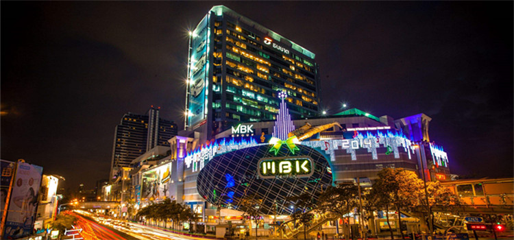

大型购物广场和百货公司
#暹罗中心（Siam Center）#
暹罗广场是曼谷的购物天堂，暹罗中心是其中之一，它是泰国第一家购物中心，已经有超过40年的历史，主要面向年轻时尚的人群，这里有泰国最大的Forever 21 门店，还有其他国际品牌诸如Steve Madden、耐克、Accessorize、Havianas、SuperDry和李维斯等。

图：暹罗中心
三楼比较有特色，主要贩卖泰国设计师品牌，如Fly Now、Kloset、Greyhound等，如果你们是追求设计感和潮流感的年轻人可以来这里逛逛。
营业时间：10：00 – 21：00
到达方式：位于天轨（BTS） Siam站的南边，从考山路可坐15，47，79，532路到达
地址： Th Phra Ram I, Bangkok
#暹罗百丽宫（Siam Paragon）#
暹罗百丽宫距离暹罗中心约200米，步行即可到达。这也是曼谷非常有人气的购物中心，堪称东南亚最大的购物中心，主要出售奢侈品，如果你和ta想买一些非常独特的东西，来这里绝对没错，各种设计师品牌的旗舰店如 Hermes、Louis Vuitton、Prada 和 Versace 都集聚在主扶梯周围的最佳位置。
暹罗百丽宫一层还有很多品牌的专柜，提供更适合日常穿戴的服饰。你们也可以在地面层的信息服务台处申请办理游客折扣卡，用此卡在购买大多数商品时可享受九五折优惠。
营业时间：周一至周日10：00-22：00

图：暹罗百丽宫
地址：Siam Paragon, 991/1 1st Floor, Rama I Road, Bangkok
#尚泰世界商业中心（Central World）#
尚泰世界商业中心（Central World）曼谷最大的休闲购物中心，Zen和lsetan两大知名百货公司的现代生活和娱乐的汇流点，集合了超过500家商店、100家餐馆，这也是曼谷市中心区最大的户外广场。这里有奢侈品，也有大众品牌产品，能满足每一位消费者的购买欲望。
到达方式：轻轨BTS到 Chit Lom站下， 或到Siam站过天桥即可到达
营业时间：10：00-22：00
图：尚泰世界商业中心
地址：Ratchadamri Road, Pathumwan, Bangkok
#Terminal 21 Shopping Mall#
非常富有创意的一个商场，布局以航站楼为主题，一共九层，每一层配以不同国家城市的著名街道、标志性建筑物等，每层的厕所风格也不一样，可谓别具特色。除了在这里买买买，你还可以拍拍拍。
到达方式：BTS： ASOK站1号出口；MRT： SUKHUMVIT站3号出口
营业时间：10：00-22：00
图：Terminal 21 Shopping Mall
地址：288 Sukhumvit Soi 19（Wattana） Sukhumvit Rd, Bangkok
商铺市集和主题购物街
#丹嫩沙多水上集市#
Damnoen Saduak 因007电影而出名的丹嫩沙多水上集市一直是游客的必到之地。狭窄的河道中挤满了卖货的小船，交错往来中戴着草帽的女商贩们大声吆喝叫卖，形成了一道独特的风景线。
集市一般从清晨一直持续到下午2点左右，早上7点到8点这一段时间是高峰期。如果想避开热闹的游客团队，建议提前一天住在附近，然后起个大早去赶早市。
营业时间：周六、周日7：00—16：00
图：丹嫩沙多水上集市
地址：Damnoen Saduak District, Ratchaburi, Bangkok
#加都加周末市场#
周末市场号称东南亚最大的集市，这里是淘货天堂、潮人胜地，且价格十分亲民。里面什么都有，真要细细逛下来，一天的时间都不够用。这里商品的价格没有最低只有更低，只要你会砍价，一路买买买，砍砍砍，每个角落都充满了惊喜。
到达方式：BTS轻轨Mo chit（N8）站，或MRT到Chatuchak Park站（出口1）
营业时间：09：00-18：00，周1至周5店铺零星开放，周末全开
图：加都加周末市场
地址：Thanon Kamphaeng Phet 3, Bangkok
#考山路夜市#
考山路是曼谷背包客云集的地方，巷子里有许多个性的小店，各店的招牌非常醒目，到了夜里这里摆卖各种廉价T-shrit、纪念品等，酒吧、街边小吃也比比皆是。夜幕降临，这里反而越发地热闹起来，小小一条街，却陷入了漫长的狂欢。
到达方式：搭乘出租车最为方便，附近没有BTS或MRT
图：考山路夜市
地址：Khao San Rd., Bangkok
#鲜花市场#
位于Thanon Chakphet的鲜花市场是曼谷的鲜花集散地，这里的鲜花既做批发也做零售，在市场内发售的多数是制作成花串的茉莉花、小黄花、兰花和礼佛用的莲花。
此外也有装饰用的玫瑰、百合和康乃馨等出售。除了顾客外，现场制作花串的、叫卖的和运送鲜花的人群络绎不绝，从另一面体现了生机勃勃的曼谷。鲜花市场里还有一个很大的蔬果批发市场。因为鲜花市场24小时营业，建议可以去逛下夜市，别有一番风味。
图：鲜花市场
地址：Jakkrapet Road, Bangkok
本地品牌
#Zhoelala#
Zhoelala是泰国本土品牌的果冻凉鞋，颜色鲜艳，款式简单，看着都好可爱呢~泰国有4个专卖店，分布在曼谷与芭提雅，PATTAYA FLOAT MARKET CHONBURI OUTLET，白金时尚购物中心，恰都恰周末市场，曼谷Terminal 21。
图：Zhoelala
#posh包包#
泰国本土品牌posh，包包款式很多，很好看的，女生一定都喜欢的~在Platinum 正门第一行左转就有店，在Ternimal 21 和Siam Square 1 也有店。
特色礼品
#零食#
首推小老板，脆脆的口感。还有MAMA桶装面，特意在饭后还泡来吃，后来家里的吃完了还在越南买回家！再就是各种热带干果，特别喜欢榴莲干和芒果干，还有各种口味的花生，特推芥末味！带不回了的就是各种热带水果，一定要在泰国吃到饱！
图：小老板海苔
#泰国皇家牌蜂蜜#
这个蜂蜜是泰国的”皇家计划”所出的商品，品质也都有所保证！因为价格比较便宜，泰国7-11就有卖，所以也买了一些带回来，同款还有白色包装的炼乳。
图：泰国皇家牌蜂蜜
#Peppermint field薄荷鼻通#
泰国几乎人手一支的人气宝贝，一边是鼻通，一边是药油。可以预防中暑，蚊叮虫咬之类。
图：Peppermint field薄荷鼻通
#Snail White蜗牛霜#
泰国SNAIL WHITE 蜗牛霜，能让肌肤自然均匀，精致，加快肌肤新陈代谢，減少皱纹，balabala~很多功效。总的来说就是补水不油腻，男女通用！还能祛痘和消除痘印。
图：Snail White蜗牛霜
退税
#退税条件#
在泰国，看到商场有“VAT Refund For Tourists”标识的，就表示在这里消费达到一定金额可以退税，且在购物日期60天内离开泰国，就可在离境时申请退税。
泰国从2014年9月份开始实行阶梯制退税，泰国退税是6%的消费税。在一个专柜或一家购物中心购物满2000泰铢就可以填写PP10表格，一定要在购物当天拿着收银条到商场2楼的客服中心领取P.P.10并填写给他们确认，隔天是不行的，所以建议大家集中在一天Shopping。
当离开泰国时，总购物超过5000泰铢，就可以在机场申请退税。购物能享受退税的仅限收银条上标注有Robinson字样的，可以退税的商店在收银台都有VAT Refond的明显提示，所以在里面的Big-C超市和一些专卖柜购物是不能退税的。
#退税流程#
在国际机场离境时，记得一定要在办理行李托运前向海关（到机场4 楼大厅后找Customs Inspection for VAT Refund的标志）出示购买的物品和PP10退税卡，海关盖章后才能托运行李。
注意超过10000铢的小件贵重物品（珠宝，首饰，手表等）不能托运，而要拿到机场退税办理处做第二次检查。过完边检后带着有海关盖章的PP10退税卡和原始购物发票，去退税办理处退税。汇票和汇款退税的转账费另算。机场的退税办理处（VAT Refund for Tourists Office）在4楼东西两侧各有一个，都能方便找到，
电话 （662） 134-0675-6
这里有比较详细的介绍可以看看以下网址：
http://bbs.16fan.com